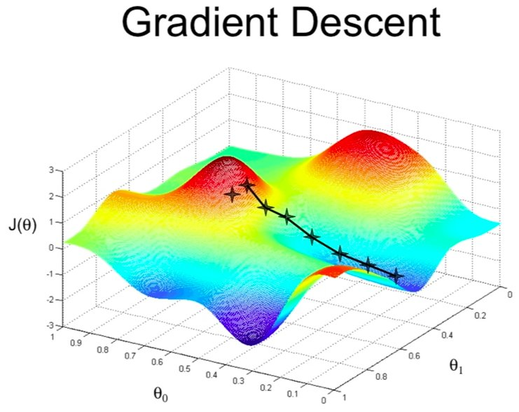

L'apprentissage automatique est une branche de l'intelligence artificielle. L'objectif est de calquer un savoir faire à partir de données pour prédire quelque chose. On sépare en trois étapes une procédure classique en apprentissage automatique, d'abord une phase d'entraînement, le modèle apprend à prédire à partir des données, puis une phase de test, qui permet de savoir si le modèle fait n'importe quoi ou non et enfin une phase de prédiction, le modèle fait ce pourquoi il a été entraîné.
Historiquement, les modèles d'apprentissage automatique ont commencé avec des méthodes linéaires, c'est à dire de chercher des combinaisons de paramètres afin de trouver un modèle de prédiction linéaire.
On veut par exemple chercher à modéliser la météo, on dispose d'un certain nombres de capteurs permettant d'avoir plusieurs informations différentes, le vent, l'humidité, l'altitude, les UVs etc... On laisse les capteurs enregistrés suffisamment pour que la machine puisse apprendre des patterns, c'est-à-dire il faut enregistrer des informations pendant des jours pluvieux, des jours ensoleillés, sur différentes saisons, et donc collecter une grosse dose d'informations pour entraîner notre modèle.
Si on mélange toutes ces informations, le modèle va apprendre comment avec les bons coefficients, on peut obtenir une prédiction de la température.
On rajoute enfin un biais, cela permet que si tout vaille 0 on n'ait pas une température de 0.
$$ Température = \alpha_{1} * Humidité + \alpha_{2} * Vitesse\_vent + \alpha_{3} * UVs + \alpha_{4} * altitude + biais $$
Le principe est alors simple, apprendre à mélanger des informations en ayant des connaissances préalables sur le phénomène pour prédire une donnée nouvelle. Le modèle linéaire a pour propriété d'additionner chacune des informations en la pondérant avec un coefficient pour retourner cette donnée nouvelle.
Les modèles mathématiques étaient déjà connus depuis longtemps, mais entraîner des modèles demande beaucoup de données. La barrière principale à la collecte et au traitement de données était d'ordre technologique, mais la progression des capacités computationnelles au cours de la fin du XXième siècle a tout changé (cf loi de Moore).
Une fois qu'on a eu des ordinateurs assez puissants, on a pu développer des algorithmes qui suivent des étapes bien précises pour apprendre. On appelle les procédures et les algorithmes permettant d'apprendre à partir des données l'entraînement.
On peut voir ça comme une recette de cuisine, l'entraînement nécessite plusieurs ingrédients pour donner un résultat satisfaisant. On va chercher à bien comprendre chacun des éléments de la recette des modèles linéaires pour arriver au réseau de neurones profonds.
Le premier ingrédient d'un bon apprentissage automatique, c'est une fonction de perte adaptée. Il en existe plein, mais on va utiliser celle qui pourrait nous intéresser avec notre exemple météo.
On veut savoir à tout moment de notre apprentissage à quel point les coefficients nous permettent de se rapprocher d'une prédiction correcte de la température.
On utilise alors l'erreur moyenne quadratique, elle sera notée $MSE$, elle prend en entrée les données enregistrées notées $y_i$, et la prédiction courante du modèle $\hat{y}_i$.
$$ MSE = \frac{1}{n} * \sum (y_i - \hat{y}_i )² $$
La formule peut faire peur, mais elle indique une information simple, la vraisemblance entre la prédiction et les données. On compte pour chaque donnée dont on dispose la différence avec la donnée prédite, le nombre stocké dans la MSE représente à quel point on est éloigné des données ou non.
L'objectif est alors simple, avoir la MSE la plus faible possible !
Une fois qu'on a cette fonction de perte, il a fallu utiliser un autre algorithme, un nouvel ingrédient, la descente de gradient . Cet algorithme permet l'optimisation de la fonction de perte, c'est-à-dire, chercher les coefficients qui la minimisent.
Pour rappel, l'objectif est d'avoir une fonction de perte la plus petite possible car elle mesure à quel point le modèle prédit des informations éloignées des données. Plus elle est faible, mieux c'est. Alors son minimum, c'est le graal, la descente de gradient s'aventure alors en quelque sorte dans la vaste étendue de coefficients possibles
pour chercher lesquels sont les meilleurs. Le terme gradient ramène ici à une idée de dérivée de la fonction, le gradient permet de connaître les tendances d'évolution de la fonction. Il pointe vers la direction qui montre la plus grande augmentation. Alors on regarde dans le sens inverse, et on trouve la bonne direction.

Cette illustration montre une procédure type de descente de gradient. Dans l'espace des paramètres, c'est-à-dire parmi toutes les valeurs possibles que peuvent prendre les coefficients de notre modèle linéaire, il y a un point correspondant à la valeur minimum de la fonction de perte. Ce point permet d'avoir les meilleurs coefficients, les gradients vont alors pointer vers la direction de ce point, en cherchant la décroissance de la fonction de perte.